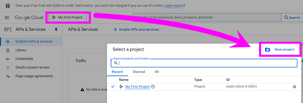
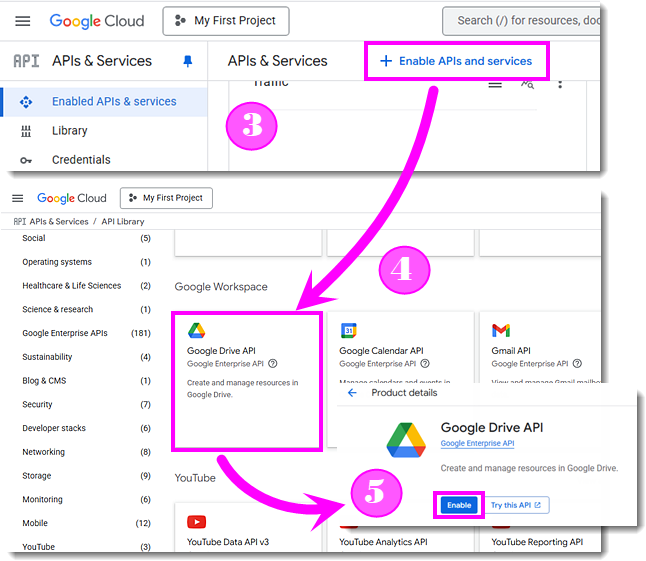
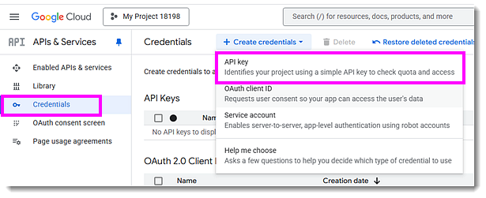
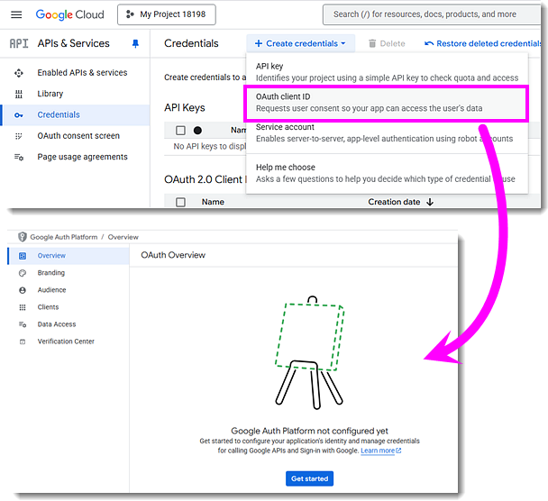
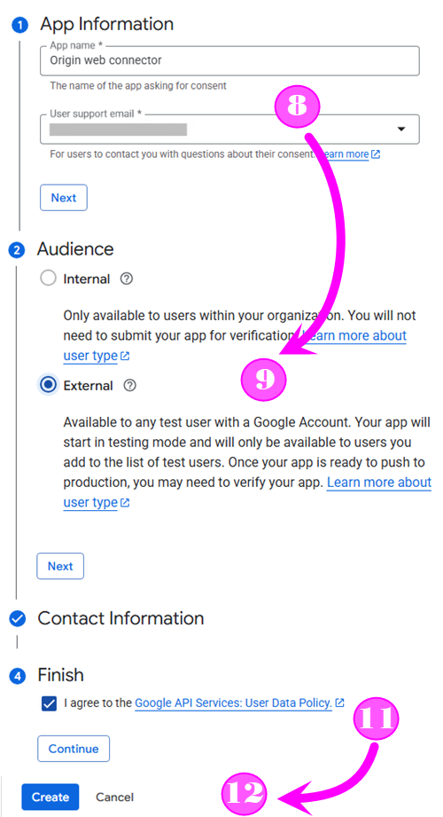
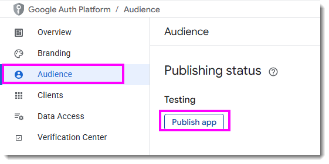
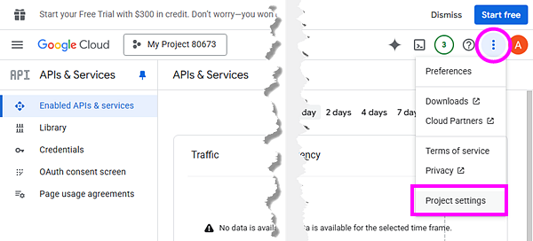
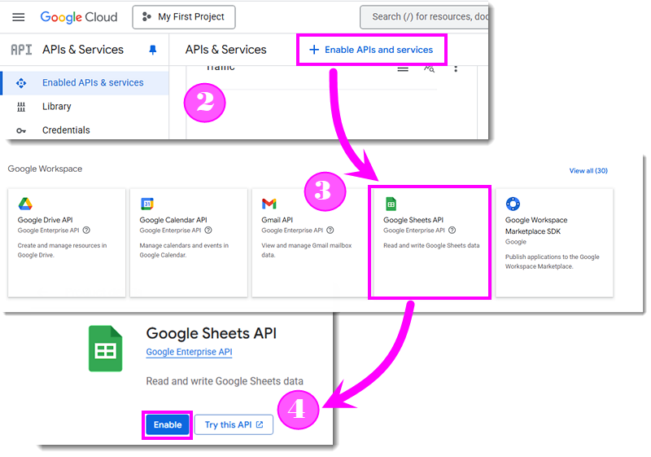

FAQ-1223 Wie erstelle ich eine Google client_id, um Origins Google Drive Cloud nutzen zu können?
Create-Google-API-Key
Letztes Update: 24.09.2026
 | Wichtiger Hinweis: Domain-Anforderung der Google Cloud
Google hat die Anforderungen zum Konfigurieren von Anwendungen der Google Cloud geändert. Beim Erstellen oder Konfigurieren des OAuth-Zustimmungsbildschirms müssen Sie eventuell Domain-Informationen bereitstellen. Vor Befolgen der untenstehende Schritte stellen Sie sicher, dass:
- Sie eine Domain haben, die in der Konfiguration der Google Cloud angegeben werden kann.
- Sie den notwendigen Zugriff haben, um die Domain- und OAuth-Einstellungen zu konfigurieren.
- Wenn Sie einen Account für den Google Workspace verwenden, brauchen Sie eventuell auch die entsprechenden Berechtigungen vom Administrator Ihrer Organisation.
Wenn Sie keine Domain-Informationen haben bzw. keine Domain konfigurieren können, empfehlen wir, dass Sie diese Methode nicht verwenden, um Origin mit Google Drive zu verbinden.
|
Das Hilfsmittel der Google Drive Cloud (Menü Mit Cloud verbinden und Schaltfläche Über Cloud öffnen) verwendet standardmäßig Origins client_id. Diese wird von allen Origin-Benutzern geteilt. Google hat eine globale Beschränkung für die Zugangsanzahl festgelegt. Das Maximum ist jetzt erreicht, und Origin hat noch keine Möglichkeit, dieses zu erhöhen.
Benutzer, die vorher noch nicht auf die Cloud zugegriffen haben, können mit Origins client_id nicht mehr auf sie zugreifen (Benutzer, die bereits erfolgreich aus sie zugegriffen haben, haben noch Zugang).
Sollten Sie eine Fehlermeldung wie diese sehen:

, dann versuchen Sie bitte Folgendes:
- Erstellen Sie Ihre eigene client_id mit den folgenden Schritten:
- Melden Sie sich an der Google API Console mit Ihrem Google-Account an (muss nicht der gleiche Account sein wie derjenige, den Sie zum Anmelden bei Origins Cloud-Konnektor verwenden).
- Klicken Sie im Popup-Dialog auf die Schaltfläche "Projekt" oben links und dann auf die Schaltfläche "Neues Projekt", um ein neues Projekt zu erstellen.

- Klicken Sie im Menü auf der linken Seite "APIs & Dienste" > "Aktivierte APIs und Dienste".
- Suchen Sie "Google Drive API" in der API Bibliothek und klicken Sie darauf.
- Klicken Sie auf der Seite "Produktdetails" auf die Schaltfläche Aktivieren.

- Klicken Sie auf "Anmeldedaten" auf der linken Seite. Klicken Sie oben auf "+Anmeldedaten erstellen" und wählen Sie "API-Schlüssel" im Popup-Menü aus.

- Klicken Sie erneut auf "+Anmeldedaten erstellen" und wählen Sie "OAuth Client ID". Klicken Sie auf "Zustimmungsbildschirm konfigurieren". Klicken Sie auf der Seite "Übersicht über OAuth" auf die Schaltfläche Erste Schritte, um die Projektkonfiguration einzurichten.

- Geben Sie auf der Seite "Projektkonfiguration" einen Appnamen wie "Origin web connector“ ein. Wählen Sie den aktuellen Account im Bearbeitungsfeld "Nutzersupport-E-Mail“ aus. Klicken Sie auf die Schaltfläche Weiter.
- Wählen Sie die Option "Extern" für die Zielgruppe. Klicken Sie auf die Schaltfläche Weiter.
- Geben Sie Ihre E-Mail in "Kontaktdaten“ ein. Klicken Sie auf die Schaltfläche Weiter.
- Aktivieren Sie das Kontrollkästchen Ich akzeptiere die "Richtlinie zu Nutzerdaten für Google API-Dienste."
- Klicken Sie auf die Schaltfläche Weiter.

- Klicken Sie auf die Schaltfläche "Erstellen".
- Wählen Sie den Applikationstyp "Desktop App" und vergeben Sie einen Namen (Standardname ist OK). Klicken Sie auf die Schaltfläche Weiter.
- Klicken Sie auf "Zielgruppe" auf der linken Seite. Klicken Sie auf die Schaltfläche "App veröffentlichen" und dann auf die Schaltfläche "Bestätigen" im Popup-Dialog.

- Hinweis: Ab diesem Schritt erfordert Google Domain-Informationen, um eine App zu veröffentlichen. Sie müssen die App-Domain (Anwendungs-Homepage, Link zur Datenschutzerklärung) unter "Branding“ angeben, und jegliche Autorisierte Domains müssen über Google Search Console verifiziert sein. Falls Sie keine verifizierte Domain besitzen, fahren Sie nicht fort - dieser Workaround wird in Ihrem Fall nicht funktionieren.
- Kehren Sie über das Navigationsmenü links oben zurück zur Seite "APIs & Dienste".
- Klicken Sie auf die Schaltfläche "..." oben rechts und wählen Sie "Projekteinstellungen".

- Stellen Sie sicher, dass Origin geschlossen ist. Aktualisiere Sie
<Origin UFF>/OCloud.ini (erstellen Sie eine neue ini-Datei, falls keine existiert).
Der Abschnitt [GoogleDrive] in der ini-Datei sollte, wie folgt, aussehen:[GoogleDrive] AppID=USER_APP_IDD ClientID=USER_CLIENT_ID ApiKey=USER_API_KEY ClientSecret=USER_CLIENT_SECRET
- Wenn Sie eine Verbindung zum Google-Sheet in der Cloud herstellen möchten, befolgen Sie diese zusätzlichen erforderlichen Schritte:
- Gehen Sie zurück zur Google API Console.
- Wählen Sie auf der linken Seite "Aktivierte APIs & Dienste" und klicken Sie auf "APls und Dienste aktivieren".
- Suchen Sie nach "Google Sheets API".
- Klicken Sie auf "Aktivieren“.

- Starten Sie jetzt Origin, um die Verbindung zu testen.
Schlüsselwörter:mit Google verbinden, Import von Google Drive, Cloud Connector, Google API Key, Diese App ist blockiert, Zugriffsversuch auf zugangssensible Infos im Google-Account, Account sichern, Google blockiert diesen Zugriff